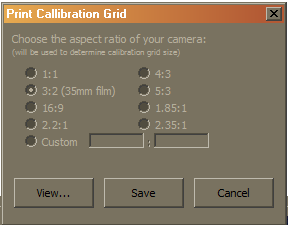
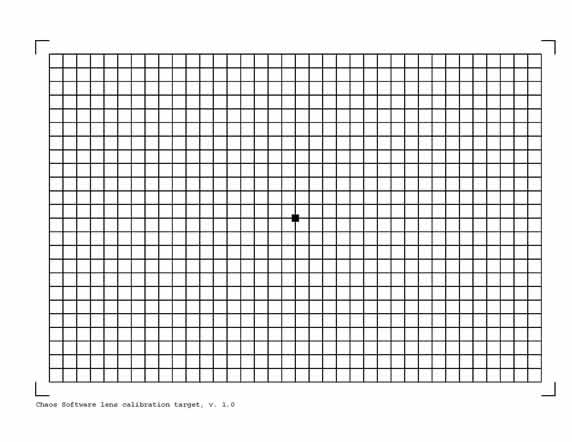
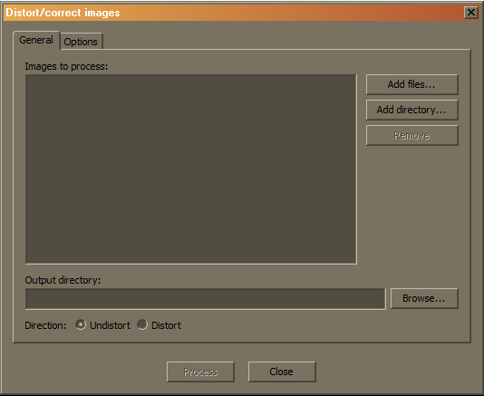
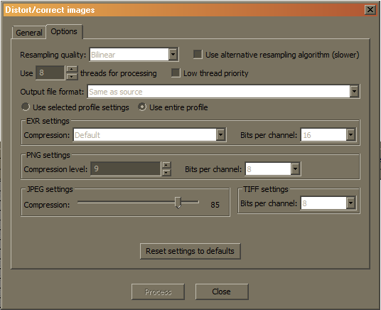

Lens Analysis Utility
Overview
The lens analysis utility is the primary tool we supply for creating, previewing and editing of V-Ray lens files (*.vrlens), and contains a camera distortion analyzer, and a tool for correcting/distorting images. The VRLENS files can be used in 3ds Max, Maya etc. to provide realistic (measured) camera distortion (as opposed to the simple quadratic and cubic modes). The VRLENS format also supports zoom lenses, and the distortion parameters are linked to the focal length of the V-Ray Physical Camera. So, as the camera is zoomed in and out, the distortion parameters are automatically varied. This provides for a very realistic level of camera distortion simulation.
Basic Workflow
V-Ray lens files are created with the lens analysis utility, from a set of calibration images, photographed with the camera we want to measure. The general work-flow to produce a .VRLENS file for a particular camera (or a particular lens, if the lenses are interchangeable) is like this:
1. A calibration chart file is created by the utility, by selecting Analysis → Print Test Chart....The utility outputs a PostScript (PS) formatted file. PS is a standard printer format, which can be easily converted to PDF via the ps2pdf utility (where applicable), or through an online service, http://www.ps2pdf.com/
2. The calibration chart is printed to a sheet of paper, which is later photographed with the camera to be analyzed.
3. The image files from the camera are downloaded to a computer, where they are processed with the lens analysis utility: first, the photos are added (with the Add photos... button) to the lens profile and then analyzed (by clicking Analyze...).
4. The analyzed lens profile is saved (by selecting Profile → Save Profile) to disk. The .VRLENS file is ready to be used in 3ds Max, Maya, etc.
Printing a Calibration Chart

From Analysis → Print Test Chart..., you should choose the aspect ratio of the camera (the image sensor, or that of the film gate). Using the correct ratio is beneficial for the accuracy of the method. Pressing the View... button will open the generated PS file in your default PostScript viewer (under Windows, you may need to install one –for example, the freeware GSview). You may also choose Save and convert the resulting PostScript file to PDF via the online service http://www.ps2pdf.com/. Both ways work. The chart is then to be printed to a sheet of clean white paper (size is not important, A4/Letter is OK). The grid lines need to be straight and free from defects (e.g., gaps, scratches and other irregularities). The illustration below shows an example calibration chart.

Photographing the Calibration Chart
The printed chart should be placed on a flat surface (wall, whiteboard) and pinned/taped/glued so that it is tense and without any bumps. The camera is to be placed directly in front of the chart, so the photograph to be taken contains the whole grid and just a bit of margin around it. Ideally, the four L-shaped corners should correspond to the corners of the photograph, but it doesn't hurt if they don't – it is fine as long as the whole grid is present and it doesn't come too close (e.g., a few pixels) of the image edges. The image center should be the black dot in the middle of the grid (the software is picky about that –only 1.5 boxes of offset is enough to have your image rejected). Pay great attention to the placement of the camera, it should be directly in front of the chart, and should point in a direction precisely perpendicular to the sheet. Even a small offset will introduce a perspective distortion, which greatly reduces the accuracy of the analysis (and therefore the software is extremely picky about this). Other things you should pay attention to:
-
Enough illumination should be provided, to ensure fast shutter speeds when using suitable ISO settings (to eliminate the possibility for motion blur or excessive noise levels).
-
Correct focusing. Fuzzy images might be hard to analyze.
-
Image resolution: 2 megapixels is sufficient. The utility gladly accepts larger images, but they don't provide better accuracy.
-
No RAW files – the utility only accepts the range of image formats supported by V-Ray –this excludes all RAW image formats. JPEG is sufficient for the purposes of the analysis.
Prime vs Zoom Lenses
For a prime lens (i.e., a lens with fixed focal length), you only need one photograph of the calibration chart (but you are encouraged to take more shots as outlined in the hints; see below). For a zoom lens, you need several photographs at various zoom levels to build a complete profile of the lens (V-Ray will interpolate the distortion parameters during rendering, so a few photos are sufficient). This means you have to re-adjust the zooming of the lens, and the camera position several times and make a photograph at each focal length. These calibration photos should cover the entire lens range. The amount of calibration photos required for an accurate profile is somewhat variable and depends on the type of lens and your needs. A simple rule that you might find useful is to consider the zoom factor of the lens and use the same amount (rounded to integer) of calibration focal lengths. E.g., to profile a 28-135mm lens, which has a zoom factor of around 5 (135/28 ≈ 4.82 ≈ 5), you need 5 photos spaced evenly in the 28-135 range. On more wide-angle lenses, where the distortion is usually more prominent in the wide end of the zoom range (and the parameters there change faster), it makes more sense to concentrate more photos in the wide end. E.g., to cover a 18-55 lens, an example calibration progression could be 18mm, 24mm, 30mm, 40mm, 55mm.
In our tests at Chaos Software, creating lens profiles proved to be a tedious job, so you may find these hints useful:
-
Most important of all, it is strongly recommended to use a tripod during the photography. It eliminates many of the factors that may ruin your images to the point they get rejected by the lens analysis utility.
-
Take a few photos at each focal length for redundancy reasons. The utility will later assign a score to each photo, so you can easily choose which images to keep or discard.
-
The utility may reject a photo for various reasons, but the most common is because of existing perspective distortion. It means that the camera wasn't directly in front of the center of the calibration chart during the shot. You must redo the photography in that case.
-
Keep in mind that the viewfinders of cameras do not usually cover 100% of the real image, but crop out some of it. Thus, if you target for 100% coverage in the viewfinder, you may later find out that you've left a margin around the grid that is needlessly large. You need to experiment to find the best shooting conditions.
-
If your viewfinder has a “central”focusing point or mark, keep in mind that it may not coincide with the true image center. You can derive the correcting offset you need to apply through some experimentation.
-
Avoid using direct (non-bounced) flash. It tends to overexpose some parts of the image, so some of the grid lines may be washed out to full white.
-
If you really need to get some images accepted, you can tune the error thresholds using Analysis → Error Thresholds.... This is a last-resort solution, don't use it if possible.
Analyzing the Calibration Photos
The photos from the camera are transferred to the PC and processed with our lens analyzer tool. First, you should click on the Add Photos... button and import the calibration photos (for a zoom lens, the software may ask you to provide the focal lengths of the photographs if it isn't able to fetch them from image metadata. In this case you need to supply the correct focal length for each photo, as otherwise the profile will be incomplete). Then, click on the Analyze... button. As the images are processed, the utility will print out a statistic for each file: whether the analysis is successful or not, the error message if it fails, and a quality rating (like “perfect”, “very good”etc), based on the following performance criteria:
-
Inter-central distance: distance between the true image center and the central bud of the grid in the photo. Less than 70% of cell size is considered OK.
-
Perspective distortion: this measures how much the grid outline differs from an ideal rectangle. More than 2% of deformation is deemed unacceptable.
-
Central angle: a measure of the angle between orthogonal lines near the grid center. If they are off by more than 0.5° from a straight angle, image is rejected.
-
Grid misalignment: The rotation of the grid in respect to the image. Anything below 10° is OK.
If the utility rejects photograph for a reason other than those four criteria, it may be helpful to turn on the detection-stage preview from Analysis → Show Detection Details and retry analysis. The preview may give you a hint why the detection finds the image difficult. After the analysis phase, the table describing the profile is populated with the detected distortion parameters of all successfully analyzed photos.
Note: if you followed the advice to take several redundant photos for each focal length, you can now either trim the profile manually by removing the inferior photos, as judged by the analyzer, or by using the automated merging tool accessible from Analysis → Consolidate Profile. “Consolidate profile” does not just remove the redundant photos –it averages the parameters of any calibration photos with the same focal length, so it is theoretically optimal. In either case, the final profile must have only a single set of parameters per each focal length. The table contains the following fields:
-
Calibration photo: this is the path to the analyzed image file. It exists for your convenience only. The profile works fine if the file does no longer exist (or if the profile is transferred to another machine –it does not matter that it lacks the photo files)
-
Focal length: This is the focal length of the photograph. Depending on the type of lens, this parameter may be important or not:
-
Prime lenses: since a prime lens would ultimately have only one table entry, it is not important what the focal length field will hold (may even be empty). The profile will work anyway.
-
Zoom lenses: it is important to have a focal length per each set of distortion parameters (i.e., each entry in the table). Here you need to adopt a consistent “focal length framework”, because there are several incompatible choices:
-
35mm-equivalent focal length framework, whereas any real (optical) focal length is converted to the equivalent focal length in 35mm film. E.g., on a Canon APS-C sensor body (where the image sensor diagonal is 1.6 times smaller than the 35-mm system's diagonal), the crop factor is 1.6x, and a 50mm lens mounted on a APS-C body behaves as a 80mm lens on a full-frame body utilizing 35mm film (80 = 50 x 1.6). This framework works well with the V-Ray physical camera, as it also mimics a 35mm camera.
-
Actual (optical) focal length framework, where the crop factor multiplication is not done. All recorded focal lengths correspond to direct lens settings. In this mode, it may be beneficial to alter the physical camera defaults to reflect the exact properties of your camera (e.g., to be able to get the same field of view, etc.) The lens utility prefers the first system, and tries to calculate the 35mm-equivalent focal length of your photographs from EXIF metadata, contained in the images (JPEG and TIFF files only). If this data is not present, but information about the optical focal length is available instead, the lens utility will use the latter, after issuing a warning about that.
-
-
-
K0: This parameter controls image scaling. Should be very close to 1 in most cases.
-
K1: This parameter represents the first-order symmetric (radial) distortion coefficient and is the primary indicator of the type of distortion (it will also be the most variable parameter throughout the zoom range). It is typically around 0, with positive values indicating barrel distortion, and negative indicating pincushion distortion.
-
K2: Some very wide-angle lenses have such distortion characteristics near the edges of the frame that are impossible to capture using the first-order coefficient alone, and thus require a second-order coefficient. K2 is also symmetric. On most moderate lenses, this parameter would be very close to 0.
-
Squeeze (Sqz): This parameter captures the asymmetrical features of the lens due to the image being stretched in X or Y direction. Should be around 1 in most cases.
-
λx (Lx): Captures the asymmetrical distortion along the X direction. Usually 0.
-
λy (Ly): Same as λx, but along the Y direction.
Note: The primary determining parameter is K1. All other parameters will be close to their default (“no-distortion”) values, but since the photographed grid can never be analyzed with absolute precision, some “noise” is expected to exist in the parameters. Further, when both K1 and K2 are nearly zero, the other parameters lose their significance and may fluctuate widely. In short, do not pay great attention if the parameters are not quite at their expected values –this doesn't mean there is a flaw in your lenses.
Using VRLENS Profiles in 3ds Max
After you've produced acceptable calibration photos for each focal length and the analysis is done, you then need to save the profile to a file (Profile → Save Profile). We use the .vrlens extension for these files. Note that this is different from the .lens extension, which we also support in 3ds Max.
When saving the profile, the lens analysis utility may emit a warning if the current data is not suitable for production use –be it because of missing focal length information, or because there are several calibration photos for a single focal length, or because some of the images aren't analyzed. You should rectify these issues before creating a working .VRLENS file.
The VRLENS files are small and simple; they don't depend on other files or resources –using them in a DR should be straightforward.
To apply a VRLENS file for a measured camera distortion simulation in 3ds Max, you need to use the V-Ray Physical Camera. From the camera's settings, go to the “Distortion” rollout, use “Lens file”distortion type and click on Lens file to select it.
Modifying Lens Profile Data
In the lens analysis utility:
-
You may change a focal length data (or enter one) by double-clicking on the respective cell in the table
-
You may change the distortion parameters by double-clicking on any of the parameter cells. If the image calibration file is present in your system, you will have a detailed preview of the “destination”, straight grid of points (represented by small blue circles) and the detected grid intersection points after the correction (represented by small red crosses). The objective is to tune the parameters in such a way so the red crosses coincide with the blue circles. You can zoom the preview by holding the right mouse button in the preview area and moving the mouse up or down. You can pan by holding the left mouse button and moving the mouse. The parameters are present in the bottom of the dialog and you can change by typing their values directly, or by clicking on the arrows, associated with each parameter (the values will be incremented or decremented based on the “tuning precision”setting). Note: if the calibration photo is unavailable, a simpler dialog with no preview will appear.
Test Correction Utility
You can see an example of how an “un-distorted”image will look like by selecting one of the calibration images (just click on its name) and selecting Correction → Test correction. This will correct the calibration photo using the detected distortion parameters. You can switch between the corrected and original file for comparison.
Arbitrary Image Correction/Distortion Utility
You may correct or distort an array of arbitrary image files using Correction → Correct/Distort images.... Thus, a “perfect” image (e.g., from a render with no distortion whatsoever) can be distorted to match the characteristics of a measured camera, or, an image sequence shot by a real camera can be corrected so it matches the quality of a theoretical “perfect”camera.
This utility uses the complete lens profile, so, for zoom lenses, it calculates the needed distortion parameters per each image, in a manner similar to the way it is done in the V-Ray Physical camera during rendering. As a consequence of this, you need the focal lengths of each image that is going to be corrected or distorted, otherwise the parameters cannot be correctly interpolated. The utility would try to infer this from EXIF metadata; when that fails, it will present you with several choices, see below.
General

Here you s elect the images to be processed. Use Add file... to add individual files, or Add directory... for a whole directory, possibly including the full directory hierarchy below the selected one. Please note that the hierarchy will not be preserved in the output directory in that case. The output directory indicates where the processed files are to be stored, and you can select the direction of the process here. When you're all set up, click Process.
Options

Here you can tweak various parameters regarding the process:
Resampling quality - you can choose the image re sampling function - choices are Nearest neighbor, Bilinear, or Area, which are a quality/speed trade off. Bilinear is fast and adequate for most purposes, so it is the default.
Use alternative resampling algorithm (slower) - This is only meaningful when using Nearest neighbor or Bilinear resampling and the processing direction is Undistort. Because of the mathematics involved in the distortion/undistortion formulas, it is much faster to transform an image in the “distort” direction. However, the “undistort”direction can still be achieved using the same internal machinery, but with inverting the image transfer function. This approach uses somewhat more memory and in some extreme cases could introduce image artifacts. This option should be mostly left unchecked; if the image quality is unacceptable, you may try to turn this option on and see if the quality improves.
Use XXX threads for processing - The image process is naturally multithreaded and will use all the processing power available in the system. Here you can tweak the number of working threads. Note: the amount of memory required for processing is proportional to the number of threads. With a lot of threads and when working with large images, your system may end up consuming all the memory available, and some of the images will not be processed in result. The situation can be alleviated by lowering the number of threads.
Low thread priority - use below-normal worker thread priority, giving more CPU time to other running tasks.
Output file format - select the output image format. By default, it is the same as the format of the source images
EXR settings, PNG settings, JPEG settings, TIFF settings - control various parameters used when writing the corresponding image types.
Correcting/Distorting Using a Prime Lens Profile
With a profile of a prime lens, all images will be processed with the same set of distortion parameters, so no further complications can arise.
A zoom lens profile, but with distortion parameters from a single calibration photo
If you have several entries in the table (e.g., the profile of a zoom lens), click on the entry you want to use for correction/distortion. Then, at the “Options”tab of the Correct/Distort utility, another item will ap pear: Use selected profile settings and Use entire profile. I f you select the former, then your images will be processed using the specified parameters only. As this situation is otherwise identical to the “Prime lens”scenario, no complications can arise either.
A Full Zoom Lens Profile
This is the most complex situation, where you have a full zoom lens profile, having different distortion parameters at various focal lengths, and you want to process an array of images, which can also have various focal lengths. So, before starting the actual image processing, the utility will first try to read the EXIF metadata from all input images. If some of the images don't have EXIF, or the focal length information isn't written in there, the utility will give you the following choices:
-
Don't process (skip): this option will skip any files that don't have focal length info.
-
Use specific parameters: use only a specific entry of the zoom lens profile (this is the same as the previous scenario) and essentially assume that all input images are of that specific focal length
-
Assume the focal length is: this is similar to the previous option, but allows you to specify any focal length; it is not confined to the focal lengths present in the profile
-
Specify focal lengths from file: supply a text file that lists the assumed focal length of each input file. That text file needs to be in the following format:
"Image_0001.exr" 35.6
"Image_0002.exr" 36.2
"Image_0003.exr" 38.0
…i.e.
"«file name»" «focal length»
with one file per line.
Correction/Distortion Utility Limitations:
-
The correction utility cannot preserve directory hierarchies; the output files are written “flat”in the output directory.
-
Only the color and alpha channels are supported. Image files containing a number of channels embedded in them (e.g., holding separate V-Ray Render Elements) will not be supported fully, and channels other than RGB and Alpha will be discarded.
-
Reading of .PSD and .VRIMG (V-Ray Image File) is supported, but writing is currently not.